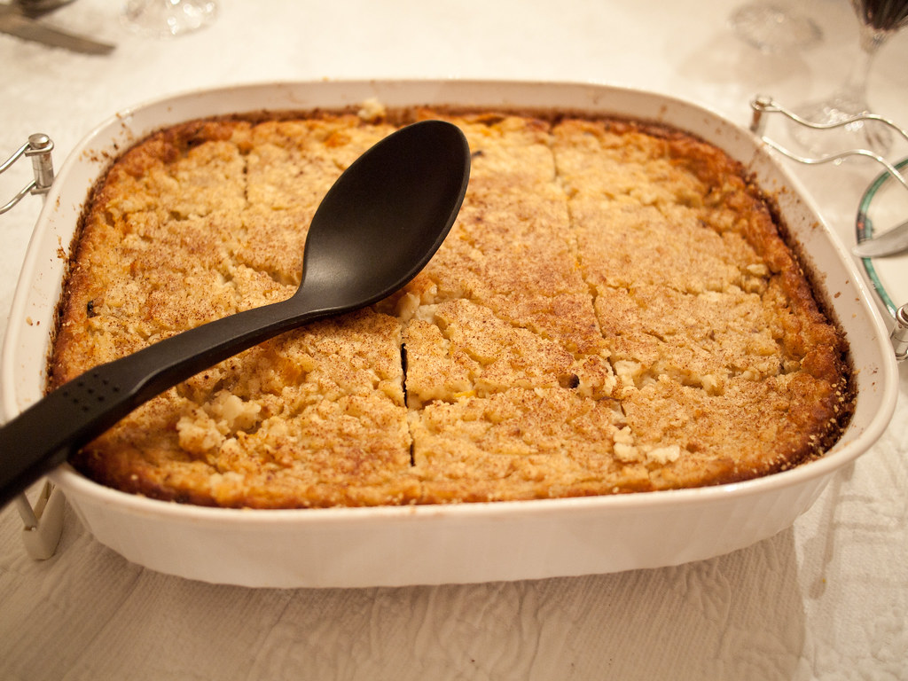

Potato Kugel

Description
A popular Jewish dish for Shabbats and Passover.
Ingredients
- 3 medium potatoes
- 1 large egg
- 2 tablespoon potato starch
- 1 small onion
- 1 teaspoon salt
- 1/4 cup olive oil
Steps
- Peel and grate the potatoes and the onion. Beat the egg and add salt.
- Heat your oven to 350o.
- Mix the potatoes, the starch, the onion and the egg in a mixing bowl.
- Add the mixture to a pan.
- Bake for 30-40 minutes, until it becomes golden brown.